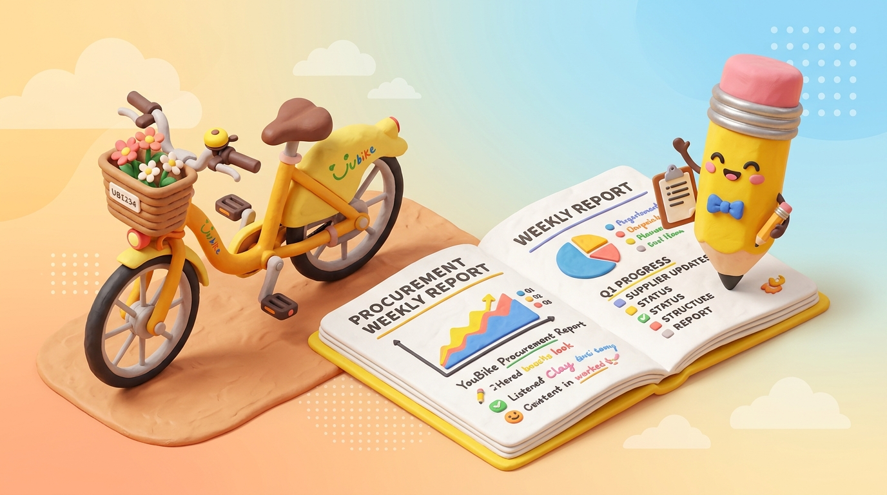
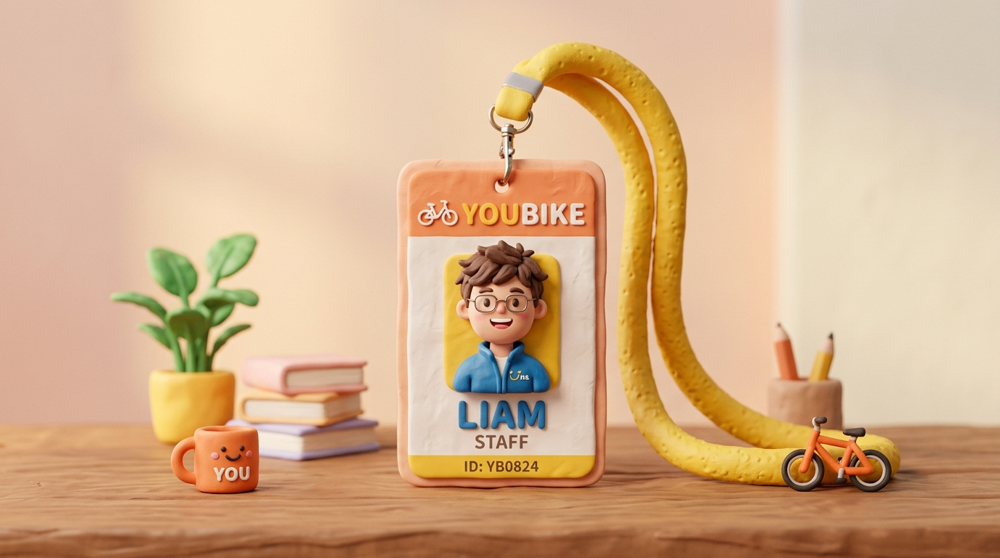
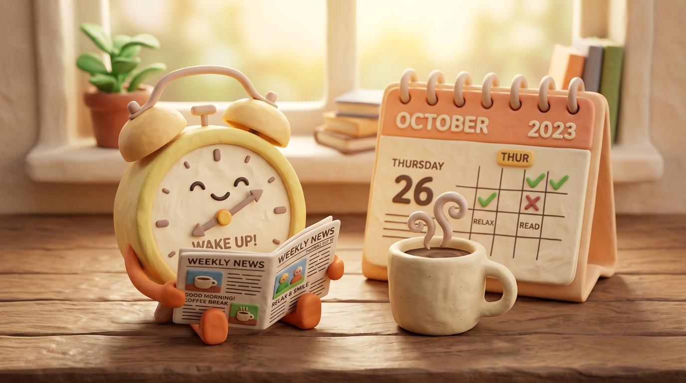
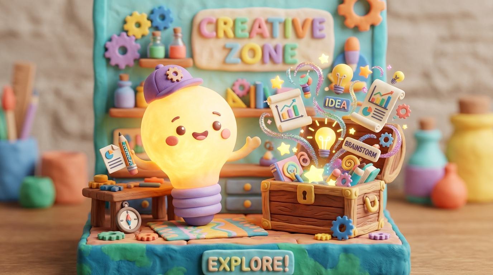
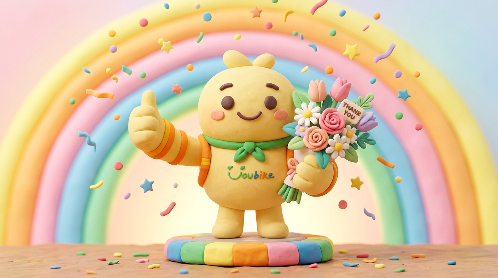

🎈問卷說明與溫馨小語
親愛的同仁您好！為了持續優化「採購電子週報」的內容豐富度與閱讀體驗，並深入掌握各單位的實際工作需求，請協助撥冗完成本份問卷。這是一份輕鬆、溫馨的回饋調查，您的每一筆想法都是推動我們進步最珍貴的寶藏！


您平時是否有定期查看「採購電子週報」？如未每次查看，歡迎於下方原因欄隨手說明。
1. 您對「採購電子週報」所發佈的內容是否容易理解？ *
2. 您對「採購電子週報」所呈現的版面設計是否清晰、容易閱讀？ *

1. 您最希望電子週報深入報導或新增哪些資訊？（可複選）
2. 您對採購電子週報系統有任何期待或希望增加的新功能嗎？（可複選）
對「採購電子週報」或「佈告欄功能」，還有任何想建議或改善的地方嗎？任何天馬行空的想法都非常歡迎！
© 微笑單車股份有限公司 經營TEAM採購 · 感謝您的參與

您所填寫的每一條寶貴建議，都已經安全送達經營TEAM採購團隊。我們將把這些溫暖的回饋化為週報與佈告欄系統不斷前進的動力！